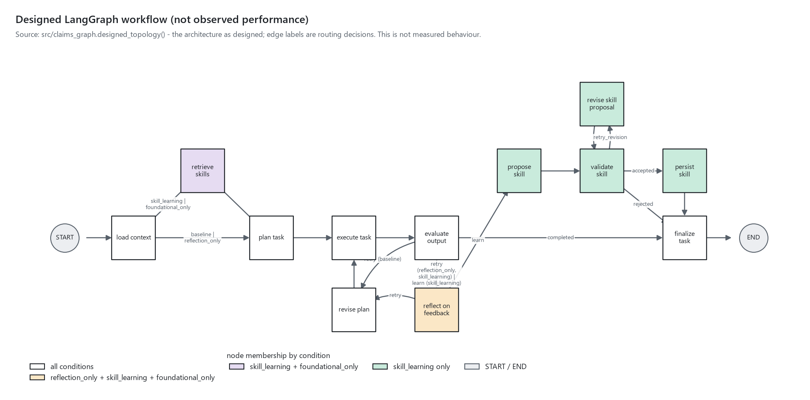

claims-skill-loop — build & experiment progress
Generated 2026-09-07T00:17:26+00:00 · auto-refreshes every 30 s · tracker updated 2026-09-06T23:52:41+00:00
Overall completion
Overall completion (weighted work units)
100%
58 of 58 units complete
· 0 units blocked
· acceptance gates: passed
ETA
rough ETA ≈ 0.0 min
computed 2026-09-06T23:52:41+00:00
· median 62.0 s/unit
over 54 completed units
Rough ETA = remaining weighted units x median observed seconds per completed unit; not a commitment.
Agent workload
configured
7
○ queued
0
◐ running
1
■ blocked
0
◆ review
0
● done
6
✕ failed
0
| Agent | Role | Status | Current work | Latest artifact | Elapsed | Progress | ETA | Blocked by | Note |
|---|---|---|---|---|---|---|---|---|---|
| L0 | Lead: integration, LangGraph core, provider, operator orchestration, acceptance | ◐ running | Phase 5: write-up, verification, ship | docs/writeup.md | 11h 11m | 12/12 units · 100% | rough ETA ≈ 0.0 min | — | Phase 5: verify 24/24 PASS; write-up populated from logs; verification log consolidated |
| A1 | SDD architect | ● done | consistency pass | docs/plan.md | 21m 27s | 8/8 units · 100% | — | — | accepted by lead: SDD docs, configs, README |
| A2 | Data steward | ● done | Dataset download and profiling | data/processed/manifest.json | 15m 03s | 5/5 units · 100% | — | — | accepted by lead: manifest, profile, README, 54 tests passing |
| A3 | Evaluation engineer: tasks, rubric, goldens, evaluator | ● done | Task suite, rubric, golden pack, evaluator | goldens/T2_portfolio_metrics.json | 26m 50s | 10/10 units · 100% | — | — | accepted by lead: tasks, rubric (152 checks), goldens, evaluator (24 tests) |
| A4 | Skill-system engineer | ● done | Skill store, validator, tests (resumed) | src/skill_store.py | 3h 25m | 7/7 units · 100% | — | — | accepted by lead: store, validator, 26 tests |
| A5 | Observability engineer | ● done | Dashboard v2, chart verification, tests (resumed) | artifacts/dashboard/progress.html | 9h 31m | 8/8 units · 100% | — | — | accepted by lead: logger, dashboard v2, charts, 17 tests |
| A6 | Analysis engineer: deterministic executor T1-T8 | ● done | Deterministic executor T1-T8 | src/task_runner.py | 25m 26s | 8/8 units · 100% | — | — | accepted by lead: executor T1-T8, 22 tests, deterministic |
Blocked work
No blocked work.
Experiment
No experiment runs yet. This area fills from
logs/experiment_status.json and logs/experiment_events.jsonl once a run starts (uv run python -m src.run_experiment init ... or run-stub).Figures

not rendered yet: learning_curve.png, reliability_curve.png, skill_accumulation.png, skill_utility.png, skill_lifecycle_graph.png, rubric_heatmap.png
Experiment logs
| Log file | Records | Bytes | Last modified (UTC) |
|---|---|---|---|
| logs/experiment_events.jsonl | — | — | not written yet |
| logs/graph_events.jsonl | — | — | not written yet |
| logs/skill_events.jsonl | — | — | not written yet |
| logs/feedback_events.jsonl | — | — | not written yet |
| logs/experiment_status.json | — | — | not written yet |
Log validation: no problems (every line parses and carries its required fields; no secret-looking keys).
Recent agent events
| Time (UTC) | Agent | Event | Status | Task | Detail |
|---|---|---|---|---|---|
| 2026-09-06T23:52:41+00:00 | lead | acceptance_gates | all docs/spec.md quality gates verified 2026-09-07 (scripts/pipeline.py verify 24 PASS; write-up states synthetic/illustrative; live API fail-closed test; frozen goldens before runs) | ||
| 2026-09-06T23:52:40+00:00 | L0 | complete_unit | ◐ running | Phase 5: write-up, verification, ship | docs/writeup.md |
| 2026-09-06T23:52:40+00:00 | L0 | complete_unit | ◐ running | Phase 5: write-up, verification, ship | artifacts/reports/run_summaries.json |
| 2026-09-06T23:05:32+00:00 | L0 | complete_unit | ◐ running | Phase 4: manual comparative run run_001 | config/freeze_manifest.json |
| 2026-09-06T23:03:30+00:00 | A5 | done | ● done | Dashboard v2, chart verification, tests (resumed) | artifacts/dashboard/progress.html |
| 2026-09-06T17:18:58+00:00 | A5 | review | ◆ review | Dashboard v2, chart verification, tests (resumed) | observability ready |
| 2026-09-06T17:18:57+00:00 | A5 | complete_unit | ◐ running | Dashboard v2, chart verification, tests (resumed) | docs/verification/A5-observability-engineer.md |
| 2026-09-06T17:15:03+00:00 | L0 | complete_unit | ◐ running | Phase 1.5: user golden review -> freeze; then manual runs | logs/runs/stub_001.json |
| 2026-09-06T17:14:05+00:00 | A5 | complete_unit | ◐ running | Dashboard v2, chart verification, tests (resumed) | artifacts/dashboard/progress.html |
| 2026-09-06T17:11:34+00:00 | A5 | complete_unit | ◐ running | Dashboard v2, chart verification, tests (resumed) | tests/test_dashboard.py |
| 2026-09-06T17:11:34+00:00 | A5 | complete_unit | ◐ running | Dashboard v2, chart verification, tests (resumed) | tests/test_logging.py |
| 2026-09-06T17:11:33+00:00 | A5 | complete_unit | ◐ running | Dashboard v2, chart verification, tests (resumed) | src/charts.py |
| 2026-09-06T17:09:28+00:00 | A3 | done | ● done | Task suite, rubric, golden pack, evaluator | goldens/T2_portfolio_metrics.json |
| 2026-09-06T17:08:18+00:00 | A3 | review | ◆ review | Task suite, rubric, golden pack, evaluator | tasks, rubric, goldens, evaluator ready for user golden review |
| 2026-09-06T17:08:17+00:00 | A3 | complete_unit | ◐ running | Task suite, rubric, golden pack, evaluator | docs/verification/A3-evaluation-engineer.md |
| 2026-09-06T17:08:16+00:00 | A3 | complete_unit | ◐ running | Task suite, rubric, golden pack, evaluator | tests/test_evaluator.py |
| 2026-09-06T17:08:16+00:00 | A3 | complete_unit | ◐ running | Task suite, rubric, golden pack, evaluator | src/evaluator.py#feedback |
| 2026-09-06T17:08:15+00:00 | A3 | complete_unit | ◐ running | Task suite, rubric, golden pack, evaluator | src/evaluator.py#core |
| 2026-09-06T17:08:09+00:00 | A6 | done | ● done | Deterministic executor T1-T8 | src/task_runner.py |
| 2026-09-06T17:07:23+00:00 | A6 | review | ◆ review | Deterministic executor T1-T8 | executor ready |
| 2026-09-06T17:07:20+00:00 | A5 | complete_unit | ◐ running | Dashboard v2, chart verification, tests (resumed) | src/dashboard.py |
| 2026-09-06T17:06:47+00:00 | A6 | complete_unit | ◐ running | Deterministic executor T1-T8 | tests/test_task_runner.py |
| 2026-09-06T17:06:46+00:00 | A6 | complete_unit | ◐ running | Deterministic executor T1-T8 | src/analyses/t8_brief.py |
| 2026-09-06T17:00:04+00:00 | A3 | complete_unit | ◐ running | Task suite, rubric, golden pack, evaluator | artifacts/reports/golden_review.md |
| 2026-09-06T17:00:03+00:00 | A3 | complete_unit | ◐ running | Task suite, rubric, golden pack, evaluator | goldens/ |